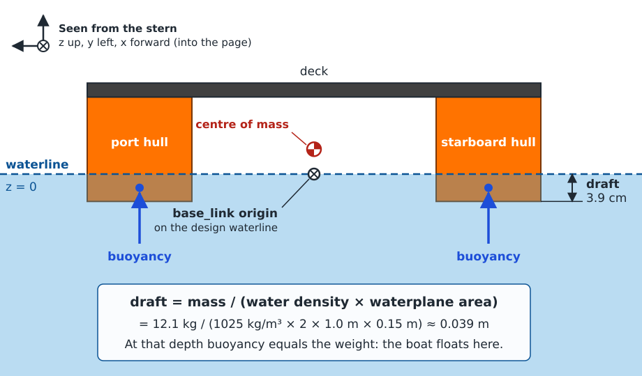
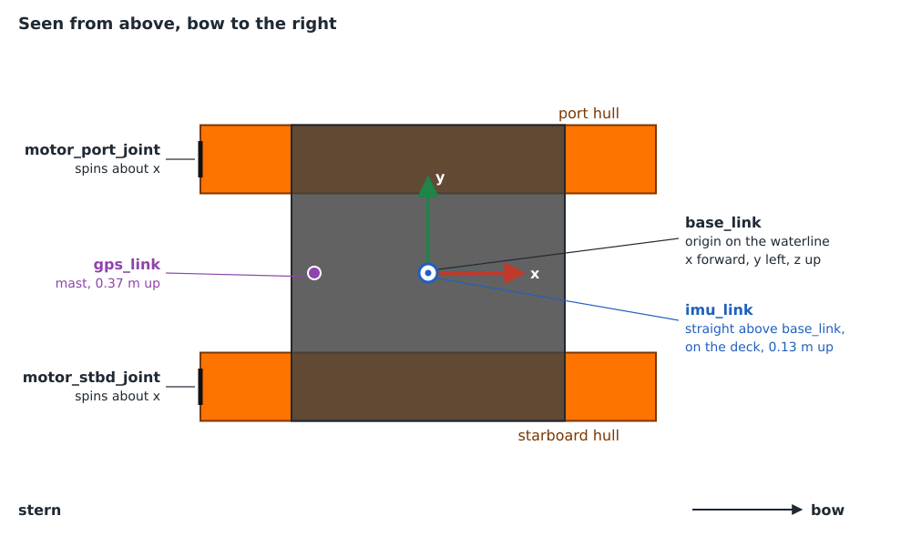

Describe the vehicle
Start with a plain URDF. It holds what is true about your vehicle whichever
simulator runs it, or none: its shape, its mass, how its parts move, and
where its sensors sit. The custom USV’s is
kai_custom_vehicle/urdf/custom_usv.urdf.xacro, and this page walks through
it.
Put the origin on the waterline
{kind=link}

The custom USV seen from the stern, to scale.
Place base_link’s origin on the design waterline, the level the water
reaches when the vehicle floats at rest. Point x forward, y to the left and z
up, as REP 103 asks.
It pays off twice: spawning at z = 0 puts the vehicle straight into its resting position, and its z in the world reads directly as how high it rides.
An underwater vehicle has no waterline. Put its origin somewhere natural instead, such as the centre of its buoyant volume.
Work out the draft
A floating vehicle sinks until the water it pushes aside weighs as much as the vehicle. For straight-sided hulls, that depth, the draft, is:
draft = mass / (water density × waterplane area)
The custom USV weighs 12.1 kg and has two hulls 1.0 m long and 0.15 m wide:
draft = 12.1 kg / (1025 kg/m³ × 2 × 1.0 m × 0.15 m) ≈ 0.039 m
So its hull bottoms sit 3.9 cm below base_link. The dimensions live in one
file, urdf/dimensions.xacro, that works the draft out from the mass and
the hull size, so changing either moves the hulls to match:
<xacro:property name="total_mass" value="${base_mass + 2 * prop_mass}"/>
<xacro:property name="draft"
value="${total_mass / (water_density * 2 * hull_length * hull_width)}"/>
<!-- Hull centre height: the hull bottoms sit one draft below base_link,
which puts base_link's origin on the design waterline. -->
<xacro:property name="hull_z" value="${hull_height / 2 - draft}"/>
The Gazebo model includes the same file, so the boxes that float the boat are the same size and in the same place as the hulls it bumps with. Keep the draft well below the hull height. If the hulls can’t push aside enough water, the vehicle sinks.
Collision shapes are for contact
The collision shapes in the URDF are what the vehicle bumps into: a quay, the
seabed, another vehicle. They do not float it. gz-maritime’s buoyancy
floats a link by the collision shapes that are marked as displacement
volume, and that mark is a Gazebo attribute a URDF collision can’t carry, so
the floating volume is added in the Gazebo model
(Mark what displaces),
or, if you want a single file, in a <gazebo> block of the URDF
(Marking from a URDF).
That split is deliberate. A bracket, a mast or a sensor housing needs contact geometry and must add no buoyancy; a hull needs both. Give every part the contact shape it deserves here, and decide what floats in the Gazebo model.
Mass and inertia
Give every moving link a mass and an inertia. The custom USV models its 12 kg as two solid hull boxes: each box’s own inertia, plus a term for its distance from the centre line. The xacro computes it from the same dimensions as the hulls, so the two stay consistent.
Rough values are fine, but not wild ones. With too little roll inertia the boat twitches; with far too much it barely rolls.
Mind the centre of mass. On the custom USV it sits 3.6 cm above the waterline, which its wide, twin-hull stance easily keeps upright. A narrow single hull needs its mass much lower.
Propellers
A propeller is a link on a continuous joint that spins about the direction it pushes, +x for driving forward. The custom USV’s macro makes one per side:
<xacro:macro name="propeller" params="side y">
<link name="motor_${side}">
<inertial>
<origin xyz="0 0 0" rpy="0 0 0"/>
<mass value="${prop_mass}"/>
<!-- A thin disc spinning about x. -->
<inertia
ixx="${prop_mass * (prop_diameter / 2)**2 / 2}"
iyy="${prop_mass * (3 * (prop_diameter / 2)**2 + prop_thickness**2) / 12}"
izz="${prop_mass * (3 * (prop_diameter / 2)**2 + prop_thickness**2) / 12}"
ixy="0" ixz="0" iyz="0"/>
</inertial>
<visual>
<!-- A cylinder's axis is z; pitch it onto x. -->
<origin xyz="0 0 0" rpy="0 ${pi / 2} 0"/>
<geometry>
<cylinder radius="${prop_diameter / 2}" length="${prop_thickness}"/>
</geometry>
<material name="propeller"/>
</visual>
</link>
<joint name="motor_${side}_joint" type="continuous">
<parent link="base_link"/>
<child link="motor_${side}"/>
<origin xyz="${prop_x} ${y} ${prop_z}" rpy="0 0 0"/>
<axis xyz="1 0 0"/>
</joint>
</xacro:macro>
Give the propeller link a small mass. When Gazebo reads a URDF it drops massless links, unless they are attached by a fixed joint. It needs no collision shape.
Sensor frames
Wherever a sensor sits, add a massless link on a fixed joint, such as
imu_link and gps_link:
<link name="imu_link"/>
<joint name="imu_joint" type="fixed">
<parent link="base_link"/>
<child link="imu_link"/>
<origin xyz="0 0 ${deck_z + deck_thickness / 2}" rpy="0 0 0"/>
</joint>
The URDF only marks the spot; the sensor itself is added in the Gazebo model. These frames also reach TF, so sensor messages can say which frame they are in.
{kind=link}

The custom USV’s frames, seen from above.
No instance name, no Gazebo
Keep the vehicle’s name out of the URDF: frames are base_link, imu_link,
never boat_a/base_link. When an instance runs, robot_state_publisher
adds its name as a prefix, so two boats give two separate TF trees from one
file (Spawn and drive).
No <gazebo> tags and no plugins either. The same file then works in RViz,
on the real vehicle’s robot_state_publisher, and as the base of the
simulation model.
Check it
xacro $(ros2 pkg prefix --share kai_custom_vehicle)/urdf/custom_usv.urdf.xacro > /tmp/custom_usv.urdf
check_urdf /tmp/custom_usv.urdf
ros2 launch kai_custom_vehicle display.launch.xml
check_urdf should report root Link: base_link. In RViz, move the sliders:
each propeller should spin about the boat’s forward axis.
Build it
xacro_add_files expands the xacro when the package builds and installs the
resulting URDF next to the Gazebo model, so model://custom_usv is complete
on its own:
find_package(xacro REQUIRED)
xacro_add_files(
urdf/custom_usv.urdf.xacro
models/custom_usv/model.sdf.xacro
INSTALL DESTINATION models/custom_usv)
install(DIRECTORY urdf models config rviz launch DESTINATION share/${PROJECT_NAME})
The urdf directory is installed as well: the Gazebo model includes
dimensions.xacro from it by relative path, and the spawn launch renders
the xacro itself for each instance. The custom USV keeps the URDF in the
same package as its Gazebo model; the Blue Robotics vehicles give it a
_description package of its own. Either way it stays Gazebo-free.
Next: Compose the Gazebo model.